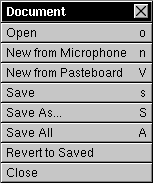

The Document Menu


The Document Menu allows you to:
 Open a sound file. Resound can open NeXT Sound (.snd) files and .au, .aiff, and .wav files. Foreign files may be auto-converted to 22KHz, and all files may be played upon opening, depending on preferences set.
Open a sound file. Resound can open NeXT Sound (.snd) files and .au, .aiff, and .wav files. Foreign files may be auto-converted to 22KHz, and all files may be played upon opening, depending on preferences set.
 Create a New sound from your system's built-in Microphone. To stop recording, press the Stop button on the Console. For more information on this, press here:
Create a New sound from your system's built-in Microphone. To stop recording, press the Stop button on the Console. For more information on this, press here:
 Create a New sound by pasting a sound from the Pasteboard. If there is no sound currently on the Pasteboard, no new sound is created. To place a sound on the Pasteboard, use the Cut or Copy commands from the Edit Menu. Note: Because Resound (and NeXT's SoundKit) doesn't actually copy the data from a cut or copied sound onto the Pasteboard, if you close the sound window from whence you cut or copied some data, you will not be able to use this command (the original data is gone).
Create a New sound by pasting a sound from the Pasteboard. If there is no sound currently on the Pasteboard, no new sound is created. To place a sound on the Pasteboard, use the Cut or Copy commands from the Edit Menu. Note: Because Resound (and NeXT's SoundKit) doesn't actually copy the data from a cut or copied sound onto the Pasteboard, if you close the sound window from whence you cut or copied some data, you will not be able to use this command (the original data is gone).
 Save your current sound document. If an original file exists, and you've chosen to Back Up the file (see Preferences
Save your current sound document. If an original file exists, and you've chosen to Back Up the file (see Preferences  ), the original will first be renamed to a .~snd extension.
), the original will first be renamed to a .~snd extension.
 Save your current sound document under a different file name using Save As. If an original file exists, and you've chosen to Back Up the file (see Preferences
Save your current sound document under a different file name using Save As. If an original file exists, and you've chosen to Back Up the file (see Preferences  ), the original will first be renamed to a .~snd extension.
), the original will first be renamed to a .~snd extension.
 Save All your open sound documents.
Save All your open sound documents.
 Revert to a previously-saved version of the sound by choosing Revert to Saved.
Revert to a previously-saved version of the sound by choosing Revert to Saved.
 Close your current sound document or currently-opened window or panel.
Close your current sound document or currently-opened window or panel.